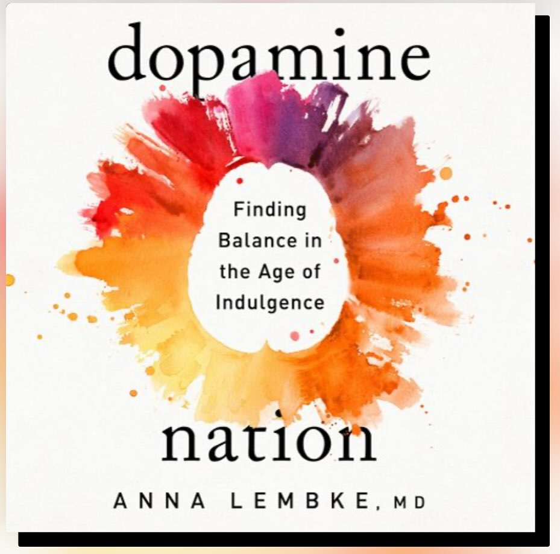
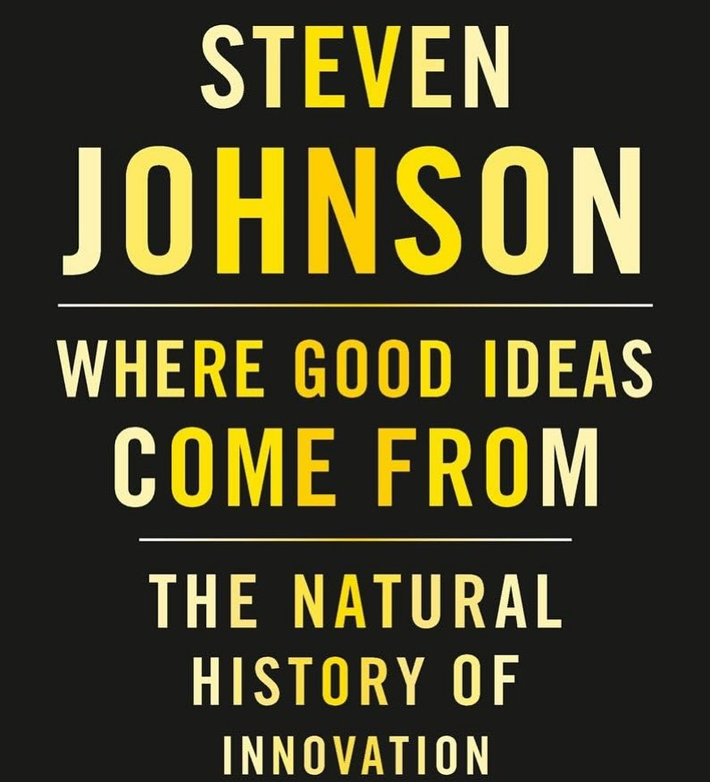
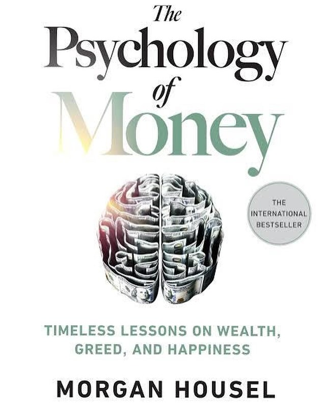
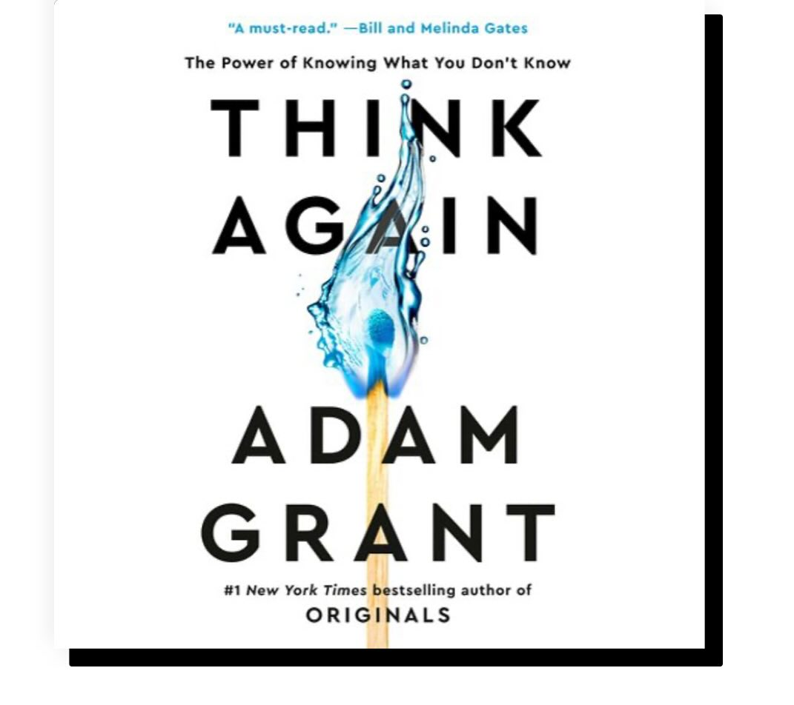
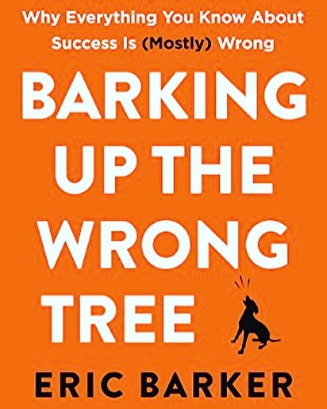
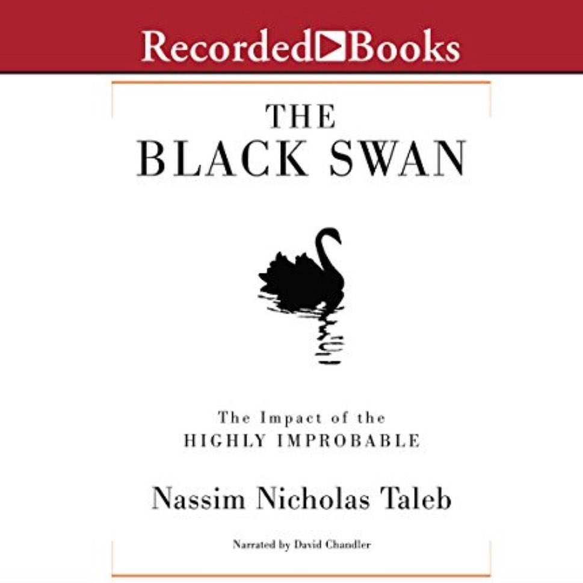
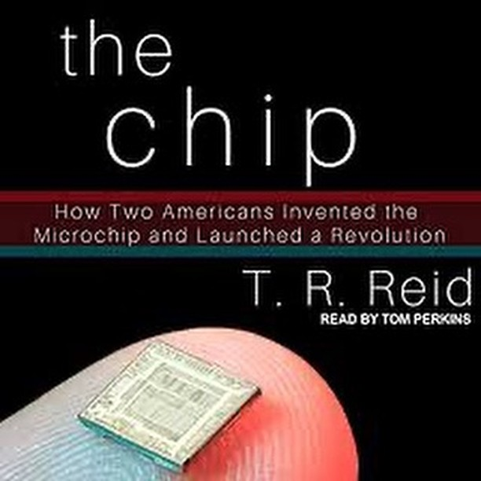

Good Reads
Book Recommendations
I love audiobooks, especially nonfiction. Here are a few of my favorites.
Each book has been carefully selected based on its impact on my thinking and personal growth. Hover over the book covers to find Audible links for audio versions.
Technology & Innovation
Books in this category: Focus on AI, automation, digital transformation, and cutting-edge technologies

Finding Balance: Lessons on Patience and Maintenance
January 2025
A great book with lessons on how to find balance, main key takeaways: Finding balance is about patience and maintenance, practicing day by day.

Innovation and Possibilities
January 2025
Fun and informative read! Key takeaways: Possibilities are adjacent, networks liquid, hunches slow, errors are part of the game, serendipity plays a role.

Investment Wisdom: The Role of Luck and Compounding
June 2024
A well-written book, had me hooked instantly and all the way through. Valuable lessons on the role of luck, consistency, nonlinearity of compounding, tailed events, and emotions in financial decisions.
Personal Development & Growth
Books in this category: Success, resilience, productivity, and intentional living

Embrace Being Wrong: The Joy of Learning
September 2024
Fun read, key takeaways were: embrace being wrong, enjoy learning and challenging assumptions and methodology, identify by your core values not your achievements.

Practical Success: Tips for Navigating Your Path
August 2020
A book full of practical tips and great advice for navigating your own definition of success. Opportunity cost is the life you give as the price of anything.
Economics & Business
Books in this category: Entrepreneurship, finance, market dynamics, and business strategy
Micro and Macro Economics Fundamentals
August 2021
Great book to learn about micro and macro level economics that every person needs to know in order to make important personal financial decisions.

Statistics Made Fun: Investment Insights
August 2019
It truly takes a creative, playful, and bright mind to make Statistics a fun subject! Learn about diversified investment portfolios and why relying on bell curves can destroy you.
Society and Culture
Books in this category: History, sustainability, cultural transitions, and social change

The Microchip Revolution: Engineering, Science, and History
January 2022
Great book: perfect balance of engineering, science, history & business about how microchips came to be and got so deeply integrated into our lives.
The Internet's Evolution: History, Ownership, and Impact
August 2021
Great book about the history of internet, how it evolved to its current form, who owns it, who really benefits from it, and why it is important for society.